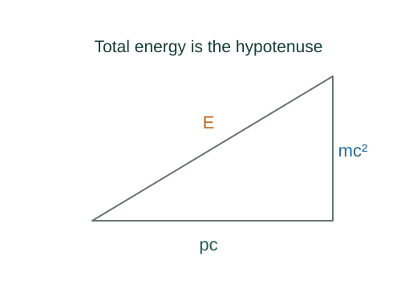

Derive the relativistic energy–momentum relation
Relativistic momentum and total energy share the Lorentz factor. Eliminating speed between them yields an invariant relation that also accommodates massless particles.
What the symbols mean
m: invariant mass; E: total energy; p: momentum magnitude; γ: Lorentz factor; K: kinetic energy.
When this applies
Special relativity for a free particle. For a massive particle use p = γmv and E = γmc², the relativistic energy–momentum definitions.
Developing the argument

State the relativistic quantities
The four-momentum has time component E/c and spatial component 𝐩. For a massive particle these are related to its four-velocity by its invariant mass.
Subtract the squared terms
Factor γ²m²c⁴ out of E² − p²c². The remaining factor is 1 − v²/c².
Cancel the Lorentz factor
By definition γ²(1 − v²/c²) = 1. This gives the invariant relation and the rest energy at p = 0.
Recover the classical limit
K is total energy minus rest energy. For v much smaller than c, expand γ ≈ 1 + v²/(2c²), giving the familiar leading term.
A closer lookHow does classical work lead to ½mv²? ↗Derive the work–kinetic energy theoremTake the massless case correctly
A massless particle cannot be assigned a rest frame or evaluated by inserting m = 0 into γmv at v = c. The invariant relation instead gives E = pc.
A worked example
A particle at v = 0.60c has γ = 1.25, so its kinetic energy is 0.25mc² and its total energy is 1.25mc².
Derivation behind this calculation ↗A point to keep straight
E = mc² is rest energy for a massive particle. Its moving total energy is γmc².
Check the assumptions and derivation ↗